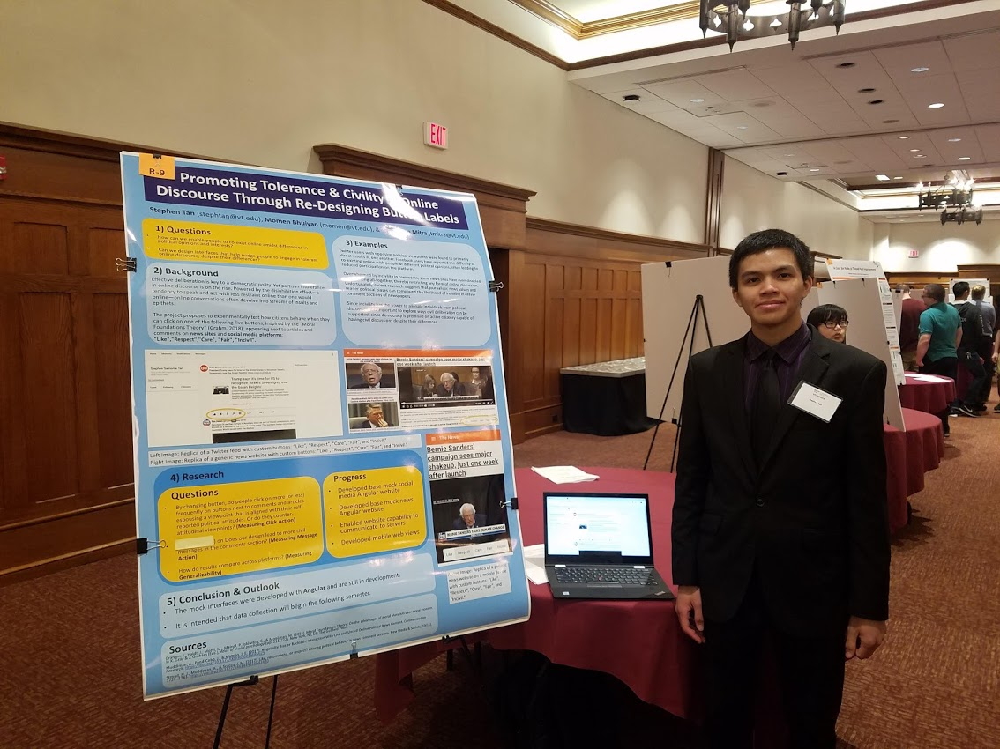

Title: Promoting Tolerance & Civility in Online Discourse through Re-Designing Button Labels

Title: Promoting Tolerance & Civility in Online Discourse through Re-Designing Button Labels

http://people.cs.vt.edu/tmitra/students/ Stephen Samonte Tan (stephtan@vt.edu), Momen Bhuiyan (momen@vt.edu) Advisor: Dr. Tanushree Mitra (tmitra@vt.edu) Effective deliberation is key to a democratic polity. Yet partisan intolerance in online discourse is on the rise. Powered by the disinhibition effect—a tendency to speak and act with less restraint online than one would online—online conversations often devolve into streams of insults and epithets. For example, Twitter users with opposing political viewpoints were found to primarily direct insults at one another. Facebook users have reported the difficulty of co-existing online with people of different political opinions, often leading to reduced participation on the platform. Overwhelmed by incivility in comments, some news sites have even disabled commenting all-together, thereby restricting any form of online discussion. Unfortunately, recent research suggests that journalistic news values and reader political biases can compound the likelihood of incivility in online comment sections of newspapers. Since incivility has the power to alienate individuals from political discussion, it is important to explore ways civil deliberation can be supported, since democracy is premised on active citizenry capable of having civil discussions despite their differences. How can we enable people to co-exist online amidst differences in political opinions and interests? Can we design interfaces that help nudge people to engage in tolerant online discourse, despite their differences? The project proposes to experimentally test how citizens behave when they can click on one of the following five buttons, inspired by the “Moral Foundations Theory” (Grahm, 2018), appearing next to articles and comments on news sites and social media platforms: "Like","Respect","Care", "Fair", "Incivil".
- 2019.06.13 Mock Social Media Website Poster PPT
- 2019.06.13 Mock Social Media Website Abstract